| Home | Kontakt | Steckbrief |
| Wandern/Trekking |
| Klettern/Klettersteige |
| Kanu |
| Fahrradtouren |
| Rucksack-Reisen |
| Touren mit Kindern |
| Wissenswertes |
| Werbung |
Einmal Nordkap und zurückTeil 2 - Der Weg zurück20.05.2012 Olderfjord - KautokeinoVon Olderfjord fahren wir die E6 gen Kirkenes. Erst geht es noch bis Lakselv am Fjord entlang, ehe sich die Straße auf ein Fjell hinaufarbeitet. Die Sonne strahlt vom blauen Himmel, die Landschaft zeigt sich sanft wellig und mit reißenden Flüssen durchsetzt, die hohen Berge sind fort. Dann erreichen wir den Abzweig auf die RV 92 nach Kautokeino.Um die Mittagszeit machen wir an einem kleinen Parkplatz Rast. Er liegt etwas abseits der Straße an einem Fluss; von dort kann man eine rund 2 km lange Wanderung zu Ausgrabungsstätten machen. Wir essen und trinken ein wenig, ehe wir die Kinder in die Kraxen verfrachten und losgehen. Der Weg führt zunächst direkt am Fluss entlang und führt uns dann einen Hügel hinauf, der Fluss bleibt dabei immer rechts von uns. Unterwegs gibt es Tafeln, auf denen Informationen auf Norwegisch zu den Funden und der Natur gibt. Bis zum Ende des Weges kommen wir nicht, da wir den Fluss queren müssten, was bei Schnee und Eis nicht gerade nett ist. Also kehren wir um. Eric brüllt die halbe Nachbarschaft zusammen, weil er noch bis zum Ende laufen will.
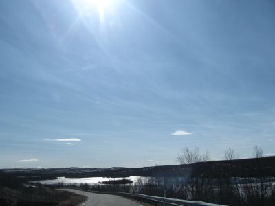
Einsames Lappland Gegen 16 Uhr erreichen wir den Campingplatz in Kautokeino. Wir mieten eine voll ausgestattete Hütte für 700 NOK, der Campingplatzbetreiber ist ein alter Same, der nur Norwegisch mit Dialekt spricht. Aber wir bekommen so etwas wie Konversation hin. Nach einer Suppe machen wir noch einen Spaziergang mit den Kindern bis zur Kirche am Ortsrand. Der Wind ist aber so eisig und stark, dass wir zügig zurück zur Hütte gehen. Wir sind komplett durchgefroren, und die Kinder glühen. Zum Aufwärmen gibt es gebackene Banane mit Honig, zum Abendessen Bami Goreng aus der Tüte: Asien lässt grüßen. Da wir freies Internet haben, surfen wir noch ein wenig und rufen Informationen zur weiteren Route in Schweden ab. Schnell steht fest, dass der Storforsen auf unserer Route liegt und dass wir uns den auf jeden Fall ansehen wollen. 21.5.2012 Kautokeino - JokkmokkHeute fahren wir nach Schweden. Nach dem Packen kaufen wir noch ein letztes Mal beim Rema 1000 in Norwegen ein, ehe es gen Süden geht. Zunächst geht es noch ein kurzes Stück durch Finnland, ehe wir die Grenze nach Schweden passieren.
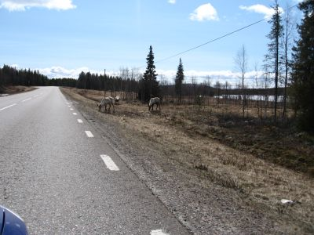
Immer mal wieder Rentiere auf und neben der Straße Das Wetter ist grau, nur zwischendurch lässt sich die Sonne mal sehen. Unser Ziel ist Gällivare, das wir gegen halb drei erreichen. Wir parken im Zentrum und suchen einen Geldautomaten. Bei der SEB-Bank bekommen wir nur 2000 SEK pro Abhebung. Da wir in der Bargeldversorung auf zwei Postbank Sparkarten setzen, die 10 Auslandsabhebungen im Jahr gebührenfrei ermöglichen, ist das nicht viel. Im Zentrum gibt es einen schönen Spielplatz, wo wir die Kinder spielen lassen, ansonsten wirkt der Ort eher deprimierend. Gegen halb vier fahren wir zum Campingplatz. Als wir in die Rezeption gehen, sitzen dort 3 Damen, wovon uns die eine erklärt, dass sie ausgebucht sind und keine Hütte zu vermieten hätten. Wir sind etwas überrascht wegen der Abweisung, fahren dann aber auf Anraten der Damen zum Dundret Skiressort. Dort erhalten wir dieselbe Antwort wie auf dem Campingplatz: “Total ausgebucht”. Okay, hier scheint uns niemand haben zu wollen! Also entscheiden wir uns, weiter nach Jokkmokk zu fahren, das wir eigentlich erst für den nächsten Tag auf dem Plan hatten. Wir tanken noch und machen uns auf die 100km nach Jokkmokk. Auf der gesamten Strecke gibt es nicht ein Hinweisschild zu einem Campingplatz oder anderen Übernachtungsmöglichkeiten. Aber noch lassen wir uns davon nicht nervös machen, nur die rüde Abfuhr in Gällivare stimmt uns nachdenklich. In Jokkmokk, das in warme Abendsonne getaucht ist, finden wir das Jokkmokk Camping Center verlassen vor. Es ist wegen Sanierung geschlossen. Zum Glück ist noch ein weiterer Campingplatz in 3 km Entfernung ausgeschildert. Skabram Camping liegt ruhig an einem See. Die junge Inhaberin kommt, als wir vor den verschlossenen Türen der Rezeption stehen. Sie vermietet uns eine nette Hütte im Ferienhausstil für 575 SEK. Hinter dem Haus stehen Kühe auf einer Koppel, Hühner laufen frei herum und unten am See gibt es eine schwimmende Sauna. Zum Inventar gehören auch ein Hund und zwei Katzen. Ein Paradies nicht nur für die Kinder. Wir kochen Abendessen und gehen dann mit den Kindern noch mal über den Hof und runter ans Wasser, das uns mit mildem Abendlicht und einem lauen Lüftchen begrüßt. Der Abend versöhnt uns doch mit dem schlechten Start in Schweden. 22.5.2012 Jokkmokk - Storsforsen - ArvidsjaurWir verlassen den schönen Platz und fahren nach Jokkmokk rein, um in der Touristeninformation einen Campingführer in Papierform zu holen. Das ist doch praktischer als in einem PDF auf dem Laptop herumzuscrollen. Danach machen wir Sightseeing und sind begeistert von der positiven Atmosphäre des netten kleinen Ortes, der sich ganz anders präsentiert als Gällivare am Tag zuvor.Schließlich machen wir uns auf den Weg nach Süden. Wir verlassen die E 45 und folgen der 374 nach Vidsel, wo wir uns den/die Storsforsen anschauen wollen, die größten bzw. längsten Stromschnellen Europas. Auf der Straße läuft uns plötzlich ein Elch über den Weg, den wir auch fotografieren können. Wir kehren noch mal um, aber er ist schon im Wald verschwunden, sehr zur Enttäuschung von Eric. Die Stromschnellen sind gigantisch, und wir schauen sie uns erstmal von gegenüber von einem Hotelparkplatz aus an. Da der Weg dorthin über eine Holzbrücke wegen Eisgangs noch gesperrt, fahren wir zum Naturreservat hinüber. Von hier kommt man über schöne Stege, die teilweise rollstuhlgerecht sind, direkt an die Stromschnellen heran. An den alten Flößertrassen sind nette Grillplätze eingerichtet, über die wir zurück zum Parkplatz spazieren.
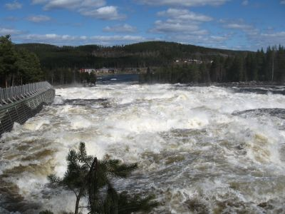
Der Storforsen Nach einem kurzen Lunch am Parkplatz fahren wir zu unserem nächsten Ziel für heute. Die direkte Route nach Moskosel und zur E45 will das Navi nicht annehmen, die Karte sagt aber, wir können sie fahren. Also fahren wir. Und bald darauf stehen wir vor einem riesigen gelben Schild, das uns in zig Sprachen erklärt, dass wir ggf. direkt nach Moskosel fahren dürfen, aber weder anhalten und fotografieren dürfen auf der Strecke. Es stellt sich heraus, dass es sich um einen militärischen Sicherheitsbereich handelt. Dem Vidsel Air Base. Dann wird die Strecke unbefestigt und wir sollen über den Fluss Piteälven. Der Straßenzustand wird immer schlechter, dann kommt noch wieder Schnee und Eis dazu. Wir finden ein Rentiergeweih und sammeln es ein. Als wir abbiegen sollen, sitzen wir im weichen Untergrund fast fest. Wir entscheiden uns umzukehren. Also zurück über den Fluss und die unbefestigte Strecke weiter bis zur E45. Wir atmen beide durch, als wir wieder Asphalt unter den Rädern haben. Das vollbesetzte und beladene Auto ist für solche Abenteuer doch nicht geeignet. Am Campingplatz entscheiden wir zu zelten. Es ist sonnig, und die Zeltwiese ist zumindest teilweise trocken, aber einige hohe Schneehaufen liegen auf der Wiese. Die Kinder haben Riesenspaß im Schnee und in den Wasserlachen und sind zweimal klitschenass.
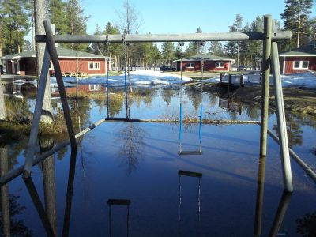
Wasserspielplatz Abends gibt es Köttbullar mit Gemüse und Reis. Ein Schotte spricht uns an und fragt, wie unsere Zeit auf den Lofoten war. Wir haben uns auf der Fähre nach Moskenes gesehen! Wir unterhalten uns nett, und er erzählt, dass es noch 2 weitere Tage übelstes Regenwetter auf den Lofoten gab, dann einen schönen Tag, ehe das Wetter wieder umschlug. Also haben wir nichts falsch gemacht. Wir verziehen uns gegen 20.30 Uhr ins Zelt, weil es doch recht frisch wird, und bald herrscht Ruhe, ehe Eric gegen halb elf plötzlich weint. Er hat von einem Elch geträumt, der ihn angesprochen hat. 23.5.2012 Arvidsjaur - StrömsundEs gibt Frühstück im Zelt, dann packen wir gemeinsam das Auto, die Kinder müssen derweil im Auto warten, denn die Matschsachen sind noch nass. Die nette Dame an der Rezeption erklärt uns beim bezahlen, dass der Winter dieses Jahr sehr hartnäckig war und jetzt erst die ersten schönen Tage angebrochen sind.Wir fahren bis Vilhelmina, das schön sein soll. Als wir durchfahren, reicht uns eigentlich der Blick aus dem Auto. Besonders beeindruckend ist es nicht. Wir halten trotzdem und gehen einkaufen, lassen die Kids an einer Skatebahn spielen und essen Mittag. Zum Abschluss gönnen wir uns ein Softeis und genießen es in der warmen Mittagssonne vor dem Supermarkt, ehe wir weiterfahren. Als Tagesziel haben wir Strömsund ausgewält. Der Campingplatz liegt direkt an der E45 und ist komplett leer, die Rezeption allerdings auch. Wir müssen zur Touristeninformation nach Strömsund, um uns anzumelden und den Schlüssel für die Sanitäranlagen zu bekommen. Wir bauen das Zelt auf, kochen Kaffee und gehen dann mit den Kids zum nahe gelegenen See spazieren.
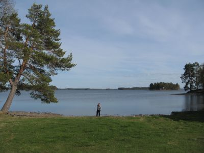
In Strömsund Zum Abendessen kochen wir in der Grillhütte neben unserem Zelt, wo uns die Mücken heimsuchen. Gestern noch reichlich Schnee, heute schon Mücken, aber wir genießen die sommerliche Wärme. 24.5.2012 Strömsund - VemdalenWir frühstücken in Ruhe und die Kinder können noch auf dem Spielplatz spielen, während wir das Auto packen. Dann stellen wir einen Splitter in Erics Hand fest, also müssen wir noch eine Operation durchführen. Ohne Betäubung. Entsprechend ist das Geschrei. Doch dann ist der Splitter draußen und das Zauberpflaster hilft schnell, den Schmerz zu vergessen. Dann fahren wir los Richtung Östersund. Das Wetter ist herrlich, immer noch blauer Himmel und angenehm warm.Östersund bietet uns erst einen Blick auf die bekannten Sportstätten, ehe wir in den Innenstadtbereich kommen. Wir parken oberhalb des Rathauses und laufen in die City hinunter. Die Einkaufsstraße ist verkehrsberuhigt und wir finden erstmal einen Spielplatz, wo die Kinder toben können. Dann versuchen wir, ans Wasser zu kommen, aber eine Bahntrasse versperrt uns den Weg, also laufen wir in die entgegensetzte Richtung zurück und suchen den ausgewiesenen McDonalds, wo wir unser Mittagessen einwerfen.
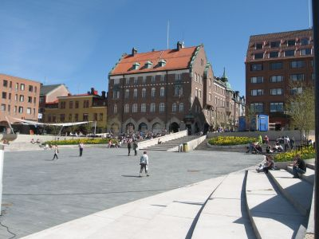
Sightseeing in Östersund Dann ist es auch schon Zeit, zurück zum Auto zu gehen. Wir haben nur für 2 Stunden einen Parkschein gelöst und um 13.10 Uhr läuft die Parkuhr ab. In der prallen Mittagshitze fahren wir weiter Richtung Vemdalen, wo wir gegen 15 Uhr den Campingplatz erreichen. Im Empfangsbereich gibt es eine Kinderspielecke, und Eric und Ida toben sich sogleich aus. Wir können uns einen Platz aussuchen und erfahren, dass noch vor 6 Tagen richtig Schnee lag und die Skipisten gefüllt waren. Jetzt ist es fast unerträglich warm. Das Zelt ist schnell aufgebaut neben einem kindgerechten Spielplatz und die Sanitärräume erkundet, die sehr sauber sind. Als wir ein Eis bei der Rezeption kaufen wollen, stellen wir fest, dass abgeschlossen ist. Kein Eis, schade. Also wandern wir zum anderen Ende des Campingplatzes und gucken uns den Teich sowie ein Westerndorf an, das zum Platz gehört und wo laut ausgehängter Plakate immer wieder Countryfestivals stattfinden. Das Essen kochen wir auf der Veranda des Sanitärhauses, das Nutzen des Herdes kostet extra, also nutzen wir unsere Trangias. Bis auf zwei Dauercamper sind wir die einzigen Gäste auf dem Platz. 25.5.2012 Vemdalen - IdreNach dem Outdoorfrühstück packen wir wieder das Auto und fahren nach Idre. Die Strecke führt uns zunächst noch über eine gut ausgebaute Straße, ehe wir auf die 311 abbiegen müssen, die nur noch maximal 60 km/h zulässt. Aber hier ist es schön, wild und einsam zugleich. Es gibt noch ein paar Schneeflecken hier oben. Für die 150 km brauchen wir 3 Stunden.
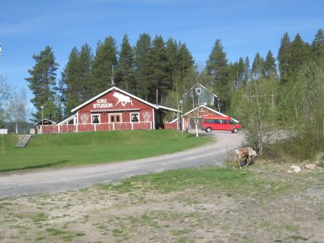
Rucksack Reisen Stugor in Idre Als wir in Idre ankommen, sehen wir zunächst auf der rechten Seite die Idre Stugor von Rucksack Reisen und einen roten Bulli davor. Eigentlich wollen wir auf den Campingplatz nach Idre aber nun fahren wir spontan aufs Gelände und schauen nach, wer da ist. Carsten und Mark, zwei feste Mitarbeiter von RR, sollen die Idre Stugor sommerfertig machen. Sie bieten uns an, das Zelt auf dem Gelände aufzubauen. Sie wären bis Montag hier, und wir wären eingeladen zu bleiben. Also bleiben wir. Nach dem Zeltaufbau fahren wir erstmal einkaufen beim ICA im Ort, ehe wir mit den Kindern zum Strand hinunter gehen. Eric zieht Schuhe und Hose aus und spielt im Wasser, Ida ist das alles dann doch noch zu kalt. Fürs Abendessen entscheiden wir, dass gegrillt werden soll. Hans sowie Thomas und Susanne kommen auch dazu und es wird ein netter Abend mit netten Gesprächen und einem Rentier, das plötzlich über die Straße spaziert (ein paar Wochen später erfahren wir, dass Campbesucher das Ren Eric getauft haben!). 26.5.2012 - StädjanWir frühstücken im Shelter, als plötzlich ein Rentier aus dem Wald kommt. Eric hat es zuerst gesehen. Seelenruhig spaziert es an uns vorbei in Richtung Auto. Es ist dasselbe Ren wie am Abend zuvor, das sich hier anscheinend sehr wohl fühlt.Dann packen wir die Sachen für unsere Städjan-Besteigung. Der Städjan ist der Hausberg von Idre und von seinem Gipfel hat man bei schönem Wetter eine fantastische Aussicht. Es ist warm und sonnig. Wir fahren hinauf auf das Idre-Fjäll und parken am Wanderparkplatz, wo wir die Kids in die Kraxen verfrachten. Tanja trägt Ida, ich nehme Eric zunächst an die Hand und später auch in die Kraxe. Der Weg ist zunächst matschig und führt uns dann steil bergauf über Geröll. Rechts von uns liegt der Winterweg, wir nutzen natürlich den Sommerweg. Es geht steil bergan. Der Sommeraufstieg zum Städjan führt steil an der Flanke hinauf. Ziemlich schnell erreichen wir verschwitzt den Gipfel. Oben gibt es noch eine illustre Runde, die einen runden Geburtstag dort feiert.
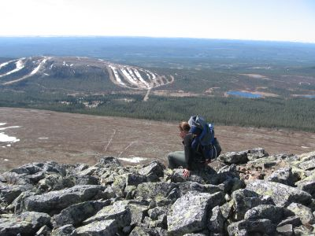
Blick vom Städjan aufs Idrefjaell Skigebiet Die Fernsicht ist gigantisch. Nachdem wir die Flasche mit Apfelschorle zur Hälfte ausgetrunken haben, geht es wieder runter. Wir schauen uns noch den Winterweg an, der zum Teil noch unter Schnee liegt. Die Gefahr mit den Kindern auf dem Rücken dort auszurutschen erscheint uns zu hoch. Also gehen wir die Flanke wieder hinunter. Am Auto sind wir beide fertig. Das nächste Mal machen wir den Städjan, wenn die Kinder dort selber hoch laufen können. Auf dem Rückweg fahren wir zum Idre-Fjäll Skigebiet. Das Cafe ist geschlossen, aber die Pizzeria hat auf. Eric bekommt eine Pizza spendiert und wir jeder ein Softgetränk. Dann suchen wir den Spielplatz und lassen die Kinder spielen, ehe wir wieder zurück zum Camp fahren. Das Wetter hat sich bei 22 Grad eingependelt, uns kommt es endlos warm vor. Nach dem Duschen fahren wir mit Carsten, Mark und Hans in die Pizzeria nach Idre, wo wir die drei zum Essen einladen. Wir sitzen draußen unter den Sonnenschirmen und genießen den Abend. Abends trinken wir im Camp noch ein Bier und tauschen die defekte Geschirrspülmaschine im Haupthaus aus. Beim Be- und Entladen aus dem Bulli ist jede Hand gefragt. 27.5.2012 Idre - MoraWir machen noch mal Frühstück im Shelter, ehe wir das Auto packen. Dann verabschieden wir uns vom Rucksack Camp. Wir fahren in Richtung Fulufjäll, wo wir die Njupeskär Runde wandern wollen, den höchsten Wasserfall in Schweden. Eric läuft die 2 km allein bis zum Wasserfall. Am Fuße des Wasserfalls ist es kalt und nass, aber grandios.
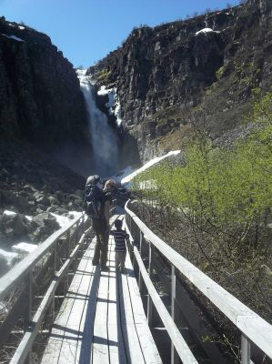
Der Weg zum Njupeskär Auf dem Rückweg will Eric auf halber Strecke nicht mehr laufen. Gut, dass die Kraxe dabei ist. Das Naturum hat noch geschlossen. Wir setzen uns in den Schatten und essen einen Apfel, ehe wir wieder ins Auto steigen und weiter gen Süden fahren. Unser Etappenziel heißt Mora am Siljansee, wo wir einen netten Campingplatz finden, der direkten Zugang zum Siljansee hat und einen schönen Sandstrand besitzt. Wir bauen das Zelt auf und gehen uns erstmal am Wasser abkühlen. Die Kinder sind bis zum Po im kalten Wasser, es gibt aber auch andere, die schon komplett baden. Im Zelt spannen wir die Moskitonetze, da wir mit Mückenattacken rechnen.
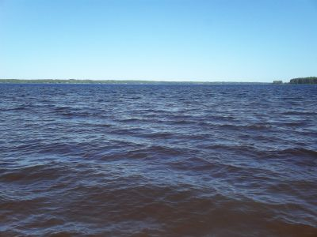
Am Siljansee 28.5.2012 Mora - Arvika - Dammarna/Stora GlaEs stürmt und ist unangenehm kalt geworden. Wir bleiben aber so lange im Zelt, bis die grauen Wolken sich verzogen haben und wir draußen frühstücken können. Beim Essen entscheiden wir, Stockholm aus unserer Rundfahrt herauszulassen. Das wäre ein riesiger Umweg und mit den Kindern ist ein Stadtaufenthalt eh kein Vergnügen. Man sieht oft nur die Spielplätze und sucht nach kindgerechten Restaurants oder Imbissen.Heute geht es nach Arvika. 240 km sind zu bewältigen, und dafür brauchen wir 3 Stunden. Um halb zwei sind wir endlich da, und wir entscheiden uns spontan, bei McDonalds am Ortseingang Mittag zu machen. Eric spielt mit einigen schwedischen Kindern, die neben uns im Rutschehaus rumturnen. Ida will währenddessen stiften gehen, was hoffentlich nicht an der Burgerkette liegt. Danach fahren wir zum großen Parkplatz in Arvika, holen die Karre raus und schieben in Richtung Touristeninformation. Neben dem Parkplatz ist ein toller, großer Spielplatz, den wir auf dem Rückweg austesten. Zunächst schieben wir aber durch die schnuckelige Kleinstadt zur Touristeninformation, wo wir den Permit für den Glaskogen holen. Wir wollen 2 Nächte in einem Shelter übernachten. Bevor wir nach Dammarna aufbrechen, kaufen wir noch beim ICA ein. Von Arvika aus geht es am Westufer des Glafsfjordens erst durch Glava, wo wir von der Hauptstraße auf eine Schotterstraße abbiegen, der wir 8 km bis Dammarna folgen müssen. Dort halten wir an einer Parkbucht, packen die wichtigsten Sachen in die Ikea-Tüte, den Rucksack und einige Beutel, verstauen die Kinder in den Kraxen und wandern zu den beiden Sheltern, die am nächsten dran liegen. Der erste Shelter ist besetzt, aber der zweite ist glücklicherweise frei, und wir sind froh, endlich das Gepäck und die Kinder abladen zu können. Wir sind von der Wanderung, die zwar nur rund 1,4 km lang war, erledigt. Erstens sind wir schwer beladen, zweitens ist der Weg ein kleiner Pfad, der immer auf und ab geht. Ich gehe noch einmal zum Auto und hole noch die restlichen Sachen, von denen wir glauben, dass wir sie in den nächsten 2 Tagen brauchen werden. Der Himmel ist bedeckt, und es ist unangenehm kühl.
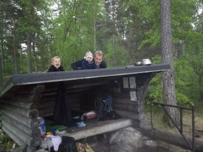
Wir haben uns häuslich eingerichtet Zurück wird erst einmal Holz vom Stapel geholt und Feuer gemacht. Naürlich klassisch ohne Feuerzeug oder Streichhölzer. Die Kinder sind begeistert. Zum Abendbrot gibt es eine Spaghetteria, weil es schnell geht. Im Shelter hat gerade eine Wespe angefangen ein Nest zu bauen. Das können wir natürlich nicht akzeptieren. Hier schlafen wir. Wir hängen das Moskitonetz auf und richten uns darunter gemütlich ein. Die Kinder werden warm eingepackt, und bald schon schlafen wir, obwohl der Wind unangenehm kalt vom See zu uns rüberweht. 29.5.2012 Stora GlaDer Morgen ist sonnig, aber kühl. Wir schlafen sage und schreibe bis halb zehn. Egal, wir haben ja heute rein garnichts vor. Das Frühstück ist gemütlich, obwohl es noch sehr schattig bei uns ist. Wir holen noch einmal Holz. Wir müssen hier im Glaskogen zwar für die Übernachtung mittels Permit bezahlen, dafür liegen an den Rastplätzen aber auch große Stapel gehacktes Holz.
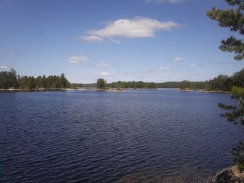
Blick aus dem nicht vorhandenen Fenster Als die Sonne endlich an den Bäumen vorbei ist, wird es auch angenehm warm bei uns. Der Faulenzertag tut uns allen gut, und wir vertreiben uns die Zeit mit Wasser filtern, Holz holen, kochen, über Felsen klettern, Vögel und andere Tiere entdecken und was man sonst noch so macht, wenn man nichts machen muss. Nach dem Abendessen verziehen wir uns zeitig in den Shelter unters Moskitonetz, um nicht von den Mücken heimgesucht zu werden. Es ist gerade mal 20 Uhr, aber Nichtstun macht bekanntlich müde. 30.5.2012 Dammarna - Glava - LenungshammarEs ist noch schön, als wir wach werden, aber empfindlich kalt. Ich bringe schon einmal die ersten Sachen zum Auto, während die anderen frühstücken. Dann packen wir alles zusammen und sorgen dafür, dass der Platz so aussieht wie vor unserer Ankunft. Ida kommt in eine Kraxe, Eric läuft dieses Mal allein. Gemütlich geht es zurück zum Auto. Dann fahren wir nach Glava, um für Abends einzukaufen, ehe wir zwischen Glava Glasbruk und Lenungshammar einen Berg rauf laufen, von wo es einen schönen Ausblick auf den Stora Gla gibt. Die Sonne scheint, ein paar Schäfchenwolken ziehen vorüber, und es ist wirklich schön.
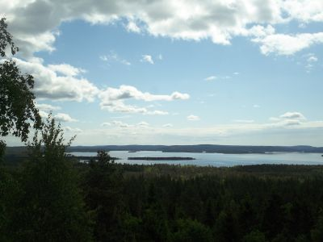
Panoramablick auf den Stora Gla Dann geht es den Berg wieder runter, und wir fahren zum Campingplatz nach Lenungshammar, wo wir für 575 SEK eine Hütte mieten. Wir glühen alle, die Sonne hat uns die letzten Tage doch ordentlich zugesetzt. Nach Pfannkuchen mit Äpfeln auf der Terrasse gibt es Gemeinschaftsduschen, dann Mittagsstunde und danach einen Spaziergang mit Steine werfen in den See. Erics Lieblingsbeschäftigung! Zurück im Haus wird gekocht und überlegt, wie es weitergehen soll, nachdem die Entscheidung gefallen ist, Stockholm auszulassen. 31.5.2012 Lenungshammar - Stömne - Bengtsfors - KarlstadIda beschließt, dass die Nacht um 6 Uhr vorbei ist, und kurz danach erscheint auch Eric im Schlafzimmer. Wir kuscheln und toben noch ausgiebig, ehe wir uns zum Frühstück in der Küche zusammenfinden. Kurz bevor es zu regnen anfängt, ist das Auto gepackt. Zunächst fahren wir im strömenden Regen nach Stömne und schauen uns das Gelände von Rucksack Reisen an. Es liegt im Dornröschenschlaf, erst Mitte Juni geht hier wieder die Saison los. Nach ein paar Fotos setzen wir uns wieder ins Auto und nehmen uns das nächste Ziel vor: Bengtsfors.Wir fahren zunächst die E18 nach Oslo, ehe wir wieder die absoluten Nebenstrecken wählen. Zwischendurch regnet es heftig, dann ist es wieder trocken. In Bengtsfors fahren wir zur Süßigkeitenfabrik. Eric schläft, also nehmen wir nur Ida mit in die Butikk und kaufen 1 kg Süßigkeiten ein. Eric hat ja bald Geburtstag, der wird sich freuen. Dann fahren wir in das kleine Zentrum, wo wir unsere Vorräte beim Coop auffüllen. Eric bekommt ein Blaubeereis, und nach einer Spazierrunde, die auf einem schönen Spielplatz direkt am See endet, gibt es noch jeweils ein belegtes Bröd mit Ost und Skinka. Wir sind gerade fertig, als es wieder zu regnen anfängt. Also flüchten wir ins Auto und fahren nach Norden. Auf dem Weg nach Karlstad, unserem Ziel für die nächsten zwei Nächte, machen wir noch eine Runde durch Amal. Das Städtchen wirkt nett und gemütlich und hat direkten Zugang zum Vänern. In Karlstad fahren wir zum First Camping und buchen eine einfache Hütte für 2 Nächte, was uns 980 SEK kostet. Die Hütte ist sauber und stimmig, aber sehr klein. Nachdem wir alles eingeräumt haben und einen Kaffee fertig haben, wollen wir mit den Kindern eine Runde über den Platz drehen, aber da gießt es wieder stark, also warten wir den Regenschauer ab. Mit Matschsachen und Gummistiefel ausgestattet sind die Kids perfekt für den Rundgang angezogen.
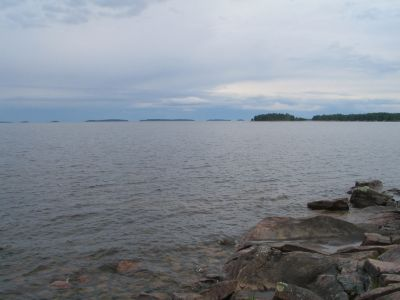
Der Vänern Wir gehen bis zum Vänern, werfen Steine und eine riesige Pfütze auf dem Parkplatz lädt beide Kinder zum Toben ein. Nach 20 Minuten brechen wir die Badesaison ab und ziehen in die Hütte zurück. Zum Abendbrot gibt es Pyttipanna aus der Tiefkühltüte, ein schwedisches Nationalgericht. Es ist lecker. Eric verweigert das Essen allerdings, dafür isst Ida richtig gut und mit Appetit. Um 21 Uhr schlafen sie endlich, und wir können uns gemütlich zurücklehnen. Es klopft kurz darauf an unserer Tür, ein Mann fragt, ob er unsere Chipkarte für die Eingangsschranke nutzen könne, seine sei wohl kaputt. Klar. Kurz darauf bringt er sie mit 2 l Eis zurück. Er sei Eishändler und das sei ein Dankeschön an unsere Hilfsbereitschaft. Das wäre nicht nötig gewesen und da die Hütte nur einen Kühlschrank ohne Eisfach hat, hat nun jeder einen Liter Eis vor sich. Was für eine Herausforderung. 1.6.2012 - KarlstadEric hat Geburtstag. 3 Jahre ist er nun alt. Etwas schüchtern erforscht er seinen Gabentisch, den wir am Abend zuvor gedeckt haben. Die Kerzen sind an, die Lollies liegen auf dem Geschenk, und die Tüte mit den Naschis ist der Bringer.Nach dem gemütlichen Frühstück fahren wir nach Karlstad rein, wo wir ein bisschen Sightseeing machen. Das Städtchen ist noch nicht ganz aufgewacht, und das kalte graue Wetter tut sein übriges. Wir steuern schon um 11 Uhr den McD an, um ins Internet zu gehen. Danach laufen wir zum Klarälven, wo wir drei Menschen zuschauen, die eben mal ein Bad im Fluss nehmen. Brrrrr!
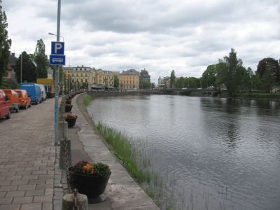
Karlstad Wir fahren zurück zum Campingplatz. Hier essen wir Erics Geburtstagskuchen und trinken Kaffee, danach spazieren wir über den Campingplatz hinüber zum Seeufer. Hier ist die Sportecke von Karlstad, und wir bekommen eine Menge an Sport geboten, u.a. einen Kinderlauf, Baseball und Frisbeegolf. Kaum zurück an der Hütte, beginnt es zu regnen, aber es ist nur ein kurzer Schauer. 2.6.2012 Karlstad - Mariestad - LidköpingWir fahren um 9.45 Uhr vom Platz und steuern als erstes Ziel Mariestad an. Die Fahrt dauert rund 1,5 Stunden, und wir haben schönstes Wetter. Allerdings ist es sehr windig und laut Thermometer auch nur 11 Grad kühl. Mariestad ist ein schnuckeliges kleines Städtchen mit direktem Zugang zum Vänern. Wir erkunden die Altstadt und suchen dann eine Mittagsrastmöglichkeit. Da wir auf dem Weg zum Auto nicht wirklich fündig bzw. uns einig werden, was wir wollen, kaufen wir erstmal beim ICA gegenüber vom Parkplatz ein. Dann gehen wir im Cafe nebenan Smörrgras essen. Eric bekommt das Barnmeny, einen Pfannkuchen mit Marmelade und Sahne.Wir verlassen Mariestad und fahren nach Süden. In Lidköping steuern wir den großen Campingplatz an, wo wir das 6. Fahrzeug in der Schlange sind. An der Rezeption erfahre ich, dass alle Hütten ausgebucht sind, falls wir zelten wollten, könnten wir gerne einen Platz auf dem Campingplatz suchen. Es ist hier direkt am Vänern allerdings sehr windig, also fahren wir die 12 km zurück und suchen den anderen Campingplatz aus dem Führer auf. Dieser ist klein und fein und auch direkt am Vänern gelegen. Die kleinen Hütten für 600 SEK haben Seeblick. Zur Ankunft gibt es erstmal einen Kaffee, ehe wir mit den Kindern eine Runde über den Platz drehen und dann zum Strand. Zum Abendessen gibt es einen Mischmasch aus der Lebensmittelkiste. Wir müssen unsere Vorräte allmählich aufbrauchen, denn das Ende des Skandinavientripps steht bevor. Morgen wollen wir nach Göteborg, und spätestens Dienstag werden wir wohl wieder in Kiel sein, so wie es momentan aussieht.
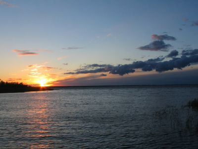
Sonnenuntergang am Vänern Zum Abend hin beruhigt sich der Wind ein wenig und die Abendsonne scheint in die Hütte. Es weckt Erinnerungen an 2007 und 2008, als wir auf dem Vänern gepaddelt sind. Wir nutzen den gesunden Schlaf unserer Kinder und stellen uns noch ein bißchen an das Seeufer, um die Stimmung zu genießen. 3.6.2012 Lidsköping - Göteborg - HalmstadNachdem wir die Hütte gereinigt und das Auto beladen haben, fahren wir in Richtung Göteborg. Vorher drehen wir noch eine Runde durch Lidköping. Das Städtchen ist wirklich nett anzuschauen, und wir sind ein bisschen traurig, dass wir hier nicht bummeln können. Aber das Wetter ist ungemütlich und es ist auch noch zu früh für irgendwelche Aktivitäten.Je näher wir Göteborg kommen, umso schöner wird das Wetter, bis schließlich die Sonne vom blauen Himmel scheint. Wir parken das Auto zentral am Theater und packen Ida in die Kraxe. Eric läuft noch, ehe er auch sein Recht einfordert, in der Kraxe getragen zu werden. Die Stadt präsentiert sich freundlich und offen. Trotz Sonntag ist die Innenstadt gut besucht, und die meisten Geschäfte und Shopping-Malls machen gegen 12 Uhr auf. Am Hafen nehmen wir einen Mittagssnack zu uns, ehe wir durch ein Einkaufszentrum zurückschlendern. Dann noch den Prachtboulevard hinauf zum Kunstmuseum. Gegen halb drei sind wir wieder am Auto und verlassen die Stadt in Richtung Süden. Wir nutzen Idas Mittagsschlaf, um so weit wie möglich vor Helsingborg zu kommen, damit wir am nächsten Tag nicht ganz so viel zu fahren haben. Der Campingplatz ist nett, sauber und mit einigen schönen Spielplätzen ausgestattet, zudem ist er nur einen Steinwurf vom Strand entfernt. Wir beziehen die Hütte und machen uns kurz darauf auf den Weg zum vorderen Spielplatz, wo es ein Hüpfkissen gibt, dann schlendern wir weiter zum Strand. Der Wind fegt uns den feinen Sand um die Ohren, aber wir genießen die Abendsonne und das Fußbad in der Ostsee.
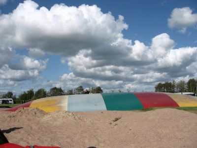
Riesen Hüpfkissen Nach einem Sandbad in der Düne ziehen wir zurück zur Hütte und duschen erst einmal, ehe wir zu Abend essen und die Kinder ins Bett bringen. Der letzte Abend in Schweden wird stürmisch, und wir müssen noch unsere Sachen von der Veranda hereinholen. 4.6.2012 Halmstad - Vogelfluglinie - KielHeute fahren wir nach Deutschland zurück. Wir müssen noch einmal tanken und dann geht es bei Coop noch mal einkaufen, denn ein paar Leckereien aus Schweden wollen wir doch mitbringen.Helsingborg erreichen wir so pünktlich, dass wir sofort nach der Bezahlung auf die wartende Fähre fahren können. Die Überfahrt nach Helsingör dauert nur 20 Minuten.
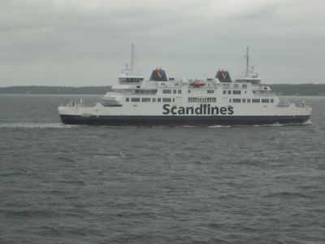
Die Vogelfluglinie bringt uns zurück nach Deutschland Die Fahrt durch Dänemark zieht sich, und wir sehnen uns nun doch danach, schnell ans Ziel zu kommen. Auch in Rödby schaffen wir die direkte Einfahrt auf die Fähre. Die Überfahrt ist nach 40 Minuten auch beendet. Von Fehmarn fahren wir über die B200 nach Kiel. Es gibt ein grosses Hallo, als wir dort auftauchen, denn keiner hat mit uns gerechnet, und wir haben uns absichtlich auch nicht angekündigt. 10.6.2012 Kiel - DuisburgDie Tour ist zu ende, und wir sind wohl behalten wieder daheim angekommen. Rückblickend hat uns Schweden besser gefallen, weil wir überall kinderfreundliche Einrichtungen vorgefunden haben und schon aufgrund des wärmeren Wetters mehr unternehmen konnten. Alles in allem sind wir wohl zu viel Auto gefahren, aber wir sind dankbar, dass die Kinder unseren Traum mitgemacht haben und augenscheinlich auch richtig Spaß an der Tour hatten. Und das ist letztendlich das Schönste an dieser Tour gewesen.LinksKristiansand Feriesenter Solvik Camping in Jørpeland Seim Camping in Røldal Lone Camping bei Bergen Campingplatz vor Trondheim Camping bei Steinkjer Camping in Mosjön Camping in Fauske Camping auf den Lofoten Solbakken Camping Fosselv Camping Camping in Kautokeino Skabram Camping in Jokkmokk Arvidsjaur Camping Strömsund Camping Vemdalens Camping Rucksack Hüttenvermietung Camping in Mora Glaskogen Camping Lenungshammar First Camp in Karlstad Camping am Vaenern Hagons Camping in Halmstad |